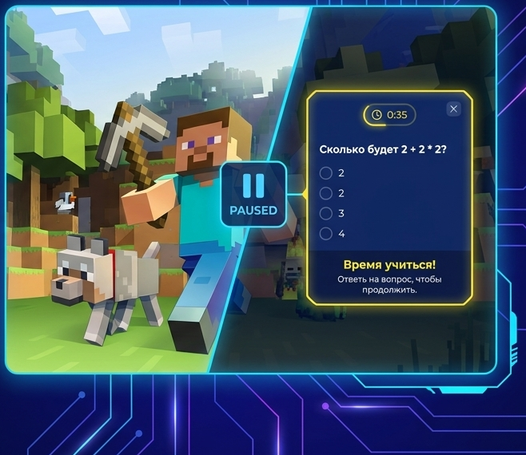

Made for short study breaks
Game pause
Minecraft stops at the chosen time
Short task
A question or mini-lesson appears
Parent view
Session data can be reviewed later
Minecraft Coach pauses Minecraft, shows a short learning task, and then lets the child continue playing.
It is a Windows app for families who want to add short quizzes or mini-lessons to game time. The goal is simple: pause for a moment, complete one small task, and return to the game.

Overview
What the app does
The app stops Minecraft at the interval set by the adult.
The child sees a short question or mini-lesson instead of a long interruption.
The app records progress so the session can be reviewed later.
Download
Start with the current Windows version
Download the desktop app first. If learning packs are available, you can add them separately afterward.
Windows app
Minecraft Coach Desktop
Checking the current build...
Download .exe
If the button is inactive, the current build has not been uploaded yet.
Learning packs
Add a pack if you want ready-made topics and tasks
Learning packs are downloaded separately. After downloading, place them in the modules folder used by the app.
How it works
What a family usually does
Install the app
Download the Windows version and start the program on the computer used for Minecraft.
Choose settings
An adult chooses the break interval, the number of tasks, and a parent password.
Add learning packs if needed
You can use ready-made packs or keep the setup simple and start with the app only.
Use the parent view
Open the session page with the program ID and password to check what is happening during the session.
Parent view
Parents can open a session page with the program ID and password
Enter the program ID shown by the app and the parent password created during setup. The page will then refresh the session data automatically.
Session page
After login, this page shows the current state of one running session.
It can display the active topic, recent activity, number of pauses, answers, coins, and the main settings used by the app.
Program ID
one session only
Parent password
private access
Auto refresh
every 15 seconds
Live data
status and statistics